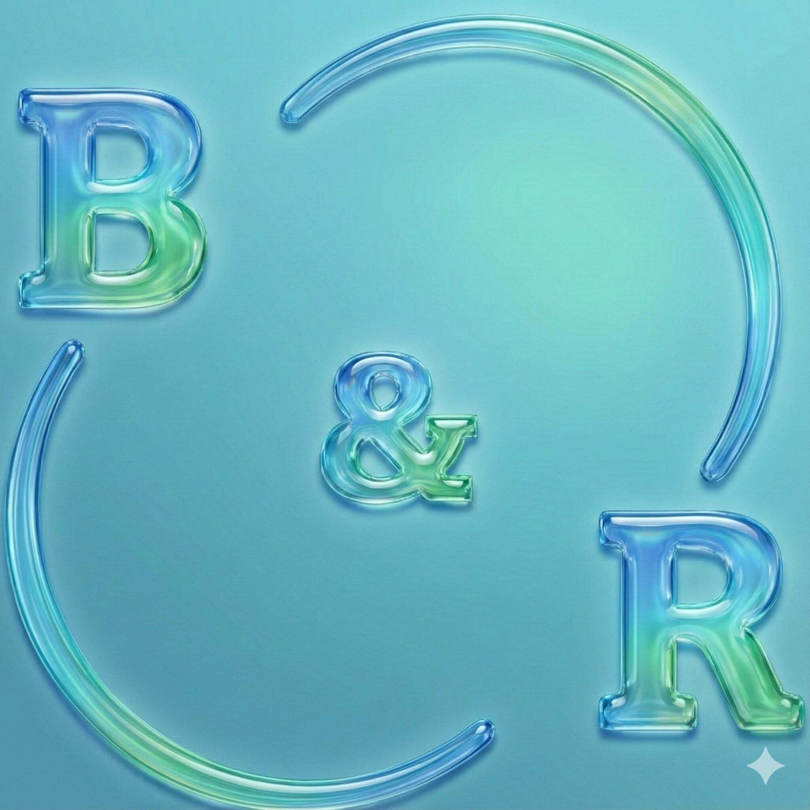
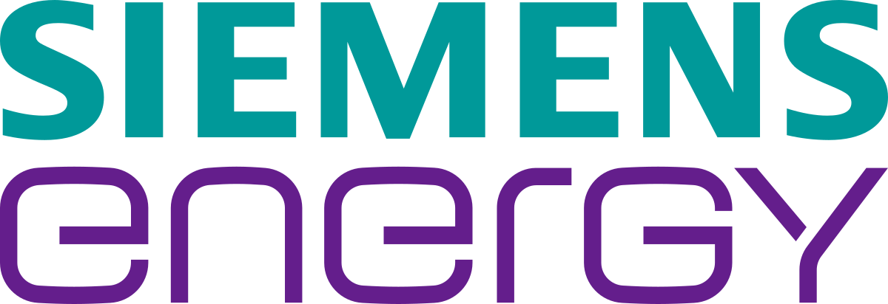
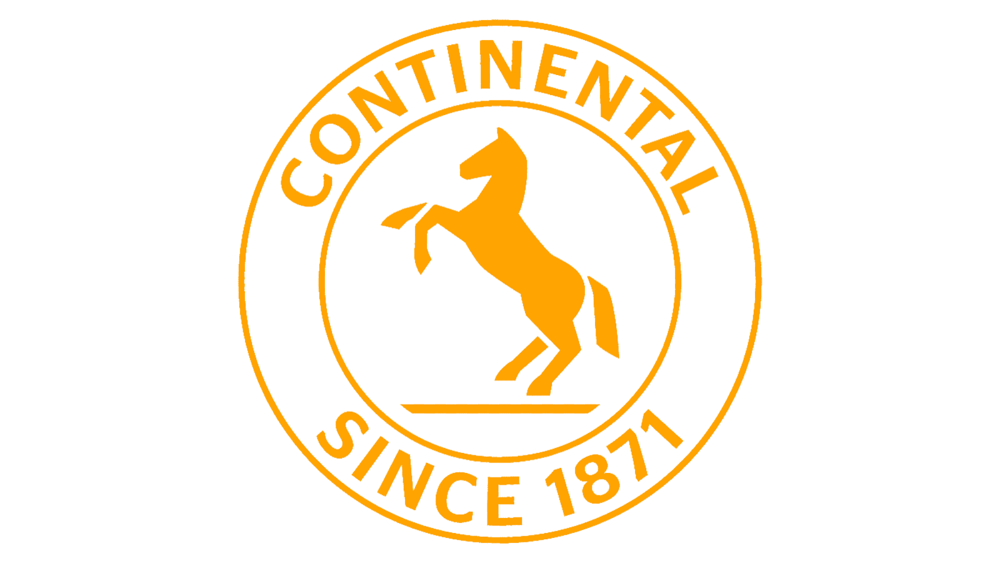

Experience: 3 years and 6 months (Agile/SCRUM)
Current Position: C++ Developer
Desired Positions: Java / C# / C++ Developer (OOP)
Current Studies: Master's in Artificial Intelligence – University POLITEHNICA of Bucharest
Latest Studies: Bachelor's in Computer Science – West University of Timisoara
Experienced Tech Stack: C, C++, Qt, Linux, JavaScript, HTML
Practicing Tech Stack: Java, Kotlin, C#, Node.js, TypeScript, Rust
Current Industry: HVDC / Energy
Desired Industries: Automotive, Energy, Mobile, Web
Hobbies: Computer Building, Video Games, Weight Lifting, Swimming
Thesis: Developing a "Diet Chatbot" using Natural Language Processing (NLP) and Retrieval Augmented Generation (RAG)
to provide personalized nutrition advice.
Tech Stack: Python, LLM, NLP, Computer Vision, BERT, CNN, Ollama, Multi-Agent Systems, Quantum Mechanics
Thesis: Developed an educational Android application using Augmented Reality (ARCore) and OpenGL to display insightful 3D visuals.
Built using Java in Android Studio, leveraging specialized coursework in mobile development.
Tech Stack: C, C++, C#, Java, Kotlin, Python, Linux, JavaScript

Self-Employed developing websites and mobile applications for small businesses.
All rights reserved.

Role: C++ Software Engineer
Team: Firmware Development
Methodology: SCRUM
Project:
Building a plugin that parses XML configuration of HVDC projects and generates HTML, Github Flavored Markdown, and PDF documentation.
Tech Stack:
Language: C++17
Framework: Qt6
GUI/Front-end: Qt Designer, HTML, JavaScript
Testing: QTest (Unit/Integration)
Compiling: CMake, Ninja, MSVC
Platforms: Debian Linux, Windows
Debugging: GDB
CI/CD: GitLab CI, Jenkins, Clang
Scripting: Python, Bash
Key Achievements:
Programming: Developed features using Design Patterns (Builder, Decorator).
DevOps: Critical CI/CD pipeline troubleshooting and support.
Mentorship: New hire onboarding and codebase integration.
Training: Traveled to Germany for specialized training on Siemens PLUSCONTROL hardware.
Automated data preprocessing, cleaning and analysis using Python and SQL.
Created meaningful data insights using Power BI, Power Query and various Power Platform tools.
Developed business applications using HTML and JSON.
Provided technical support and discussed stakeholder requirements.
Tech Stack: Python, SQL, HTML, JSON, Microsoft Power Platform tools

Role: Embedded Software Engineer
Team: Passive Safety and Sensorics / Airbag Control Units
Methodology: Agile
Projects: Fiat, Hyundai, BMW
Tech Stack:
Languages: C, C++
Scripting: Bash, VBA
Web Technologies: TypeScript, HTML, Node.js, MongoDB
Embedded Tools: IBM Rhapsody (UML), Eclipse Wind River IDE
Standards: MISRA (Coding Guidelines)
Version Control: GitHub
Data: CSV, JSON
Key Achievements:
Maintenance: Developed bug fixes and new features for a local inventory website using Node.js (TypeScript, MongoDB).
Automation: Worked on a VBA generator to automate C header creation.
Key Achievements:
Tooling: Developed a C++/Bash script (ParSizeChecker Parser) adopted globally for debugging embedded code.
Collaboration: Worked with international teams delivering projects for prominent automotive clients.
Testing: Tested online tools and provided feedback on usage capabilities.
Training: Completed specialized training in UML, Embedded C, and MISRA standards.
| Name | Skills | Institution |
|---|---|---|
| Smart Calculator | C++, MFC, GUI, Visual Studio | West University of Timisoara |
| Sekai Stats | Microsoft Power BI, SQL, HTML | West University of Timisoara |
| Personal Website | HTML, CSS, JAVASCRIPT, SQL, PHP | BackRest |